# import tidyverse library
library(tidyverse)
# read the CSV with WVS data
wvs_cleaned <- read_csv("data-output/wvs_cleaned_v1.csv")
# Convert categorical variables to factors
columns_to_convert <- c("country", "religiousity", "sex", "marital_status", "employment")
wvs_cleaned <- wvs_cleaned |>
mutate(across(all_of(columns_to_convert), as_factor))
# peek at the data, pay attention to the data types!
glimpse(wvs_cleaned)Data Visualization and Descriptive Stats
Bella Ratmelia
Today’s Outline
- Descriptive Statistics
- Data Visualization in ggplot using World Values Survey data, including guidelines on how to choose the appropriate visualization.
Checklist when you start RStudio
- Load the project we created last session and open the R script file.
- Make sure that
Environmentpanel is empty (click on broom icon to clean it up) - Clear the
ConsoleandPlotstoo. - Re-run the
library(tidyverse)andread_csvportion in the previous session
Refresher: Loading from CSV into a dataframe
Use read_csv from readr package (part of tidyverse) to load our data into a dataframe
Recap: Descriptive Statistics
Univariate (i.e. single variable) Descriptive Stats
- Measures of central tendency:
mean(),median(),Mode() - Measures of Variability:
min(),max(),range(),IQR(),sd()(standard deviation),var()(variance) - Distribution shape:
skewness()andkurtosis()frommomentslibrary. This is easier to see with histogram
- Measures of central tendency:
Bivariate (i.e. two variables) Descriptive Stats
- Contingency table / cross tab (for categorical data)
- Covariance - describe how two variables vary together
- Correlation - describe relationship strength and direction in a sample. (If we want to use this to infer about a population from a sample, it would fall under inferential stats)
- Visualizations e.g. Scatterplots, side-by-side boxplots, stacked bar charts, etc.
From last week: Basic R Functions for Descriptive Stats
Last week, we explored some basic R functions for descriptive statistics.
mean(): arithmetic averagemedian(): middle valuesd(): standard deviationvar(): variancerange(): range of valuesIQR(): interquartile rangesummary(): provides a summary of descriptive statisticsMode()function fromDescToolspackage: the most frequently occuring value 1
Univariate Descriptive Stats
Measures of Central Tendency
Let’s start by examining the age variable in our dataset.
How we can interpret / report this:
“The age distribution of this sample is fairly symmetrical, as indicated by the very close mean (48 years) and median (48 years) values. The mode of 54 years suggests a slight right-skew in the age distribution, with a cluster of participants in their mid-50s.”
Measures of Variability or Dispersion
How we can interpret / report this:
“The age distribution of this sample is fairly wide spread. With a standard deviation of 16.72144, suggesting that most individuals’ ages deviate from the mean by approximately 16.72 years. The range of ages spans from 18 to 93 years, which covers a wide range of age groups within the sample. The interquartile range (IQR) of 28 years, which represents the middle 50% of the data, indicates a moderately wide distribution of ages in the central portion of the dataset.”
Distribution Shape
The function skewness() and kurtosis() is available through R package called moments. You may need to install it first before calling the library and its functions like in this code below.
How we can interpret / report this:
“The age distribution has a very slight right skew (skewness = 0.10), meaning there are slightly more outliers toward older ages, but the skew is minimal since values between -0.5 and 0.5 are considered approximately symmetric. The kurtosis of 2.02 is lower than a normal distribution’s kurtosis of 3, indicating this distribution is platykurtic - it has lighter tails and is more uniform or”flatter” than a normal distribution.”
Visualizing with ggplot
Describing the spread and shape of distribution with just words is not very productive, so typically it is accompanied with visualization.
ggplotis plotting package that is included insidetidyversepackageworks best with data in the long format, i.e., a column for all the dimensions/measures and another column for the value for each dimension/measure.
Visualizing with ggplot
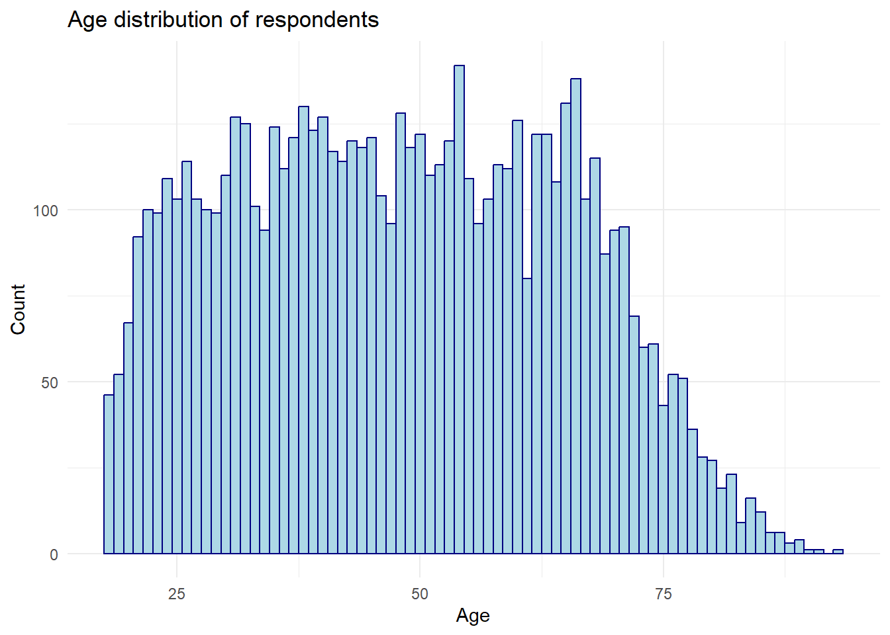
Anatomy of ggplot code
Charts built with ggplot must include the following:
1wvs_cleaned |>
2 ggplot(aes(x = age)) +
3 geom_histogram(binwidth = 1, fill = "lightblue", color = "navy") +
4 labs(title = "Age distribution of respondents",
x = "Age",
y = "Count") +
5 theme_minimal()- 1
- Data - the dataframe/tibble to visualize.
- 2
- Aesthetic mappings (aes) - describes which variables are mapped to the x, y axes, alpha (transparency) and other visual aesthetics.
- 3
- Geometric objects (geom) - describes how values are rendered; as bars, scatterplot, lines, etc.
- 4
- Provide titles and labels to your graph
- 5
- (Optional) apply a theme/look to your graph
Tip: open the ggplot cheatsheet
Tip
A strategy I’d like to recommend: briefly read over the ggplot2 documentation and have them open on a separate tab. Figure out the type of variables you need to visualize (discrete or continuous) to quickly identify which visualization would make sense.

Going back to our univariate descriptive stats on age variable
Let’s visualize the variability with boxplot to get a better sense of the spread.
Going back to our univariate descriptive stats on age variable
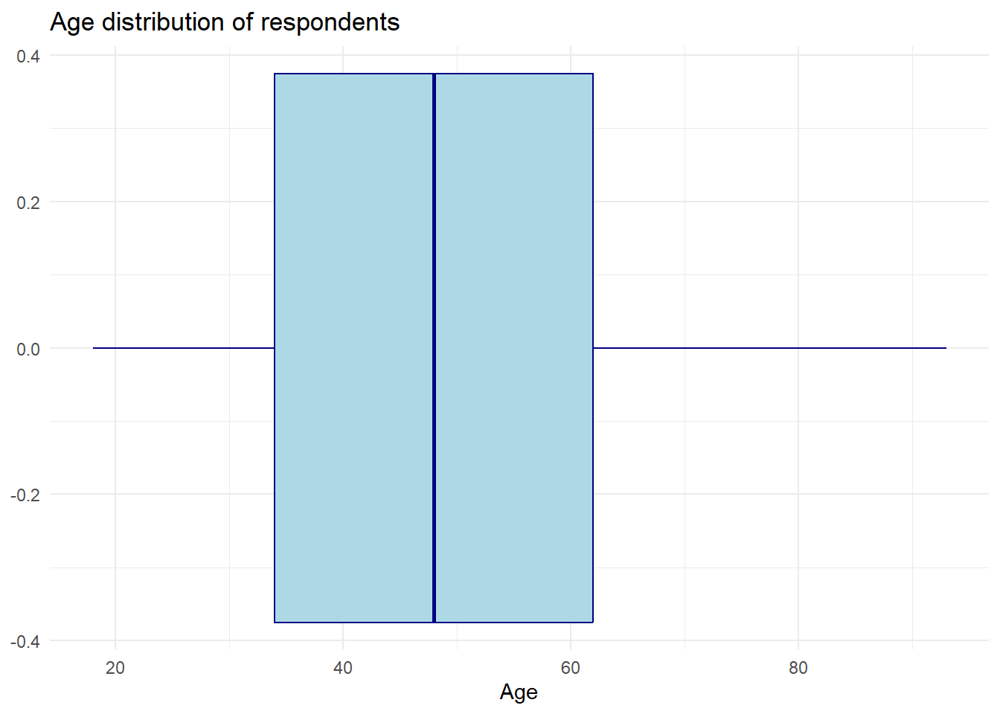
Categorical Data - Frequency Distribution
The
agevariable is a numerical / continuous data. We can’t applymean(),median()and other central tendency measures to categorical data such asage_grouporemployment_status. We can, however, visualize them.When dealing with categorical data, first take note on whether you want to visualize the proportion or the frequency distribution.
Let’s visualize the frequency distribution of survey participants by
country:
Categorical Data - Frequency Distribution
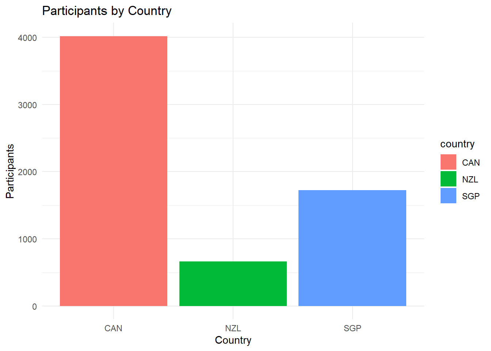
Categorical Data - Proportion
When we want to show proportion (i.e. in terms of “parts of whole”), we must first quickly calculate the proportion with count()
Let’s create a new dataframe called wvs_country_proportion to hold this data.
wvs_country_proportion <- wvs_cleaned |>
group_by(country) |>
summarize(n = n()) |> # count the number of participants each country
mutate(proportion = n/sum(n)) # calculate proportion
print(wvs_country_proportion)# A tibble: 3 × 3
country n proportion
<fct> <int> <dbl>
1 CAN 4018 0.628
2 NZL 660 0.103
3 SGP 1725 0.269Categorical Data - Proportion (cont’d)
And then, we use this proportion table to create a pie chart by adding coord_polar() layer after geom_bar() and some changes in aes() and geom_bar()
Categorical Data - Proportion (cont’d)
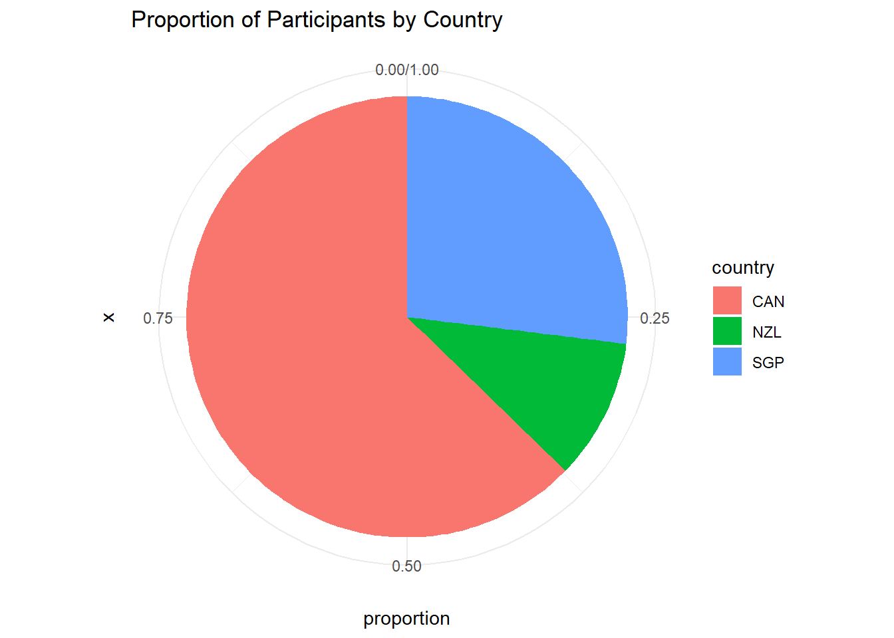
Learning Check 1A
Using the wvs_cleaned dataset:
Create a histogram that visualizes the distribution of financial_satisfaction
Learning Check 1A
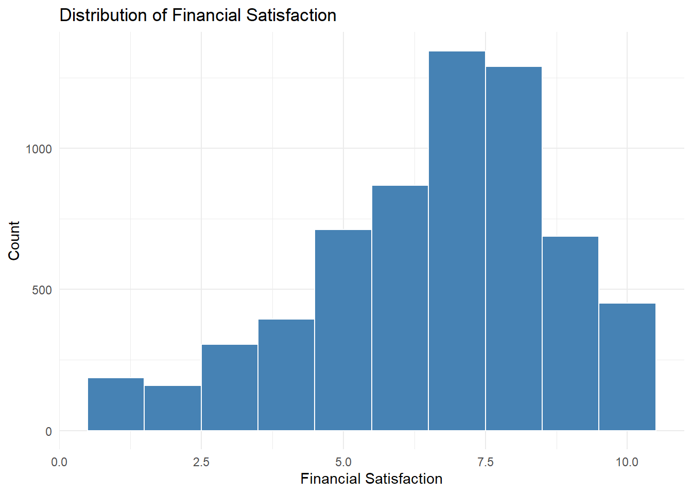
Learning Check 1B
Create a barchart that visualizes the frequency of religiousity
Learning Check 1B
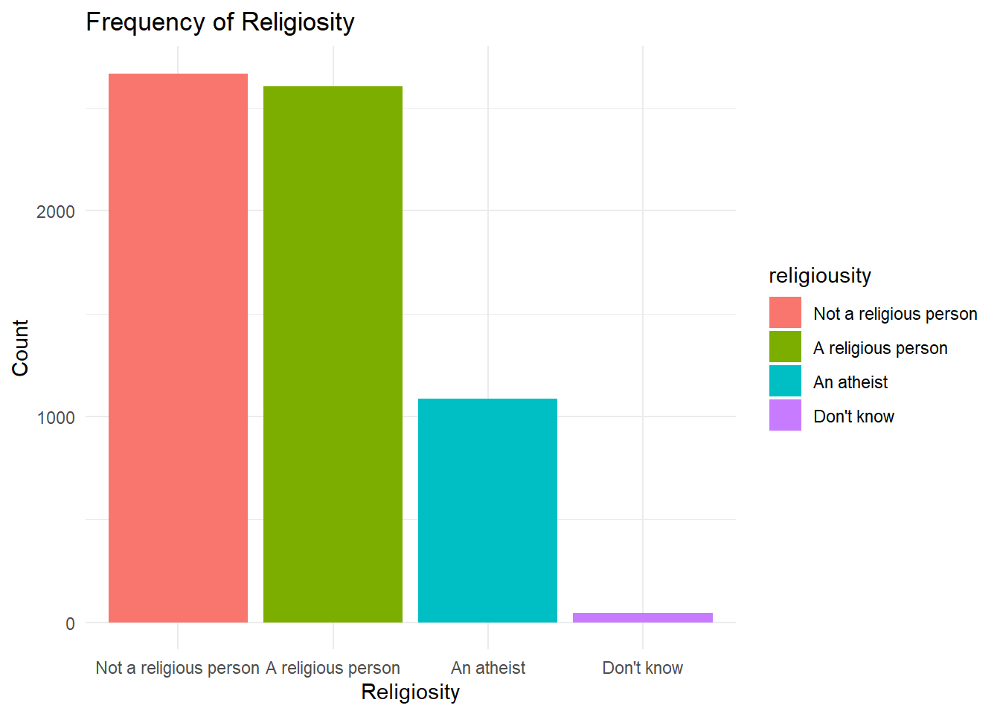
Bivariate Descriptive Stats
Three Combinations in Bivariate Descriptive Stats
Bivariate descriptive statistics describe and summarize relationships between two variables in your dataset without making inferences about a larger population. They include numeric measures like correlation or covariance, and visualizations like scatterplots, side-by-side boxplots, or contingency tables.
Think of them as taking a snapshot of how two variables relate to each other in your current data.
Since data can be continuous or categorical, there can be three combinations when we deal with bivariate descriptive stats:
- Both categorical (e.g.
age_groupandcountry) - Both continuous (e.g.
financial_satisfactionandlife_satisfaction) - One continuous, one categorical (e.g.
countryandlife_satisfaction)
Both categorical
Examine relationships between categorical variables
Look at joint distributions and proportions
Compare group compositions
First, let’s create a contingency table of age_group and country!
Both categorical (cont’d)
We can also create a proportion table just like we did earlier
wvs_cleaned |>
group_by(country, age_group) |>
summarise(n = n()) |> # count the frequency of participants by age group and country
mutate(prop = n/sum(n)) # calculate proportion`summarise()` has grouped output by 'country'. You can override using the
`.groups` argument.# A tibble: 12 × 4
# Groups: country [3]
country age_group n prop
<fct> <chr> <int> <dbl>
1 CAN 18-28 712 0.177
2 CAN 29-44 1232 0.307
3 CAN 45-60 1061 0.264
4 CAN 61+ 1013 0.252
5 NZL 18-28 27 0.0409
6 NZL 29-44 119 0.180
7 NZL 45-60 222 0.336
8 NZL 61+ 292 0.442
9 SGP 18-28 246 0.143
10 SGP 29-44 511 0.296
11 SGP 45-60 550 0.319
12 SGP 61+ 418 0.242 Both categorical (cont’d)
For categorical data like this, we can use barchart to visualize the frequency distribution. Stacked bar chart can be used to visualize proportion.
Change position = "dodge" to position = "stack" to stack the bar chart
Both categorical (cont’d)
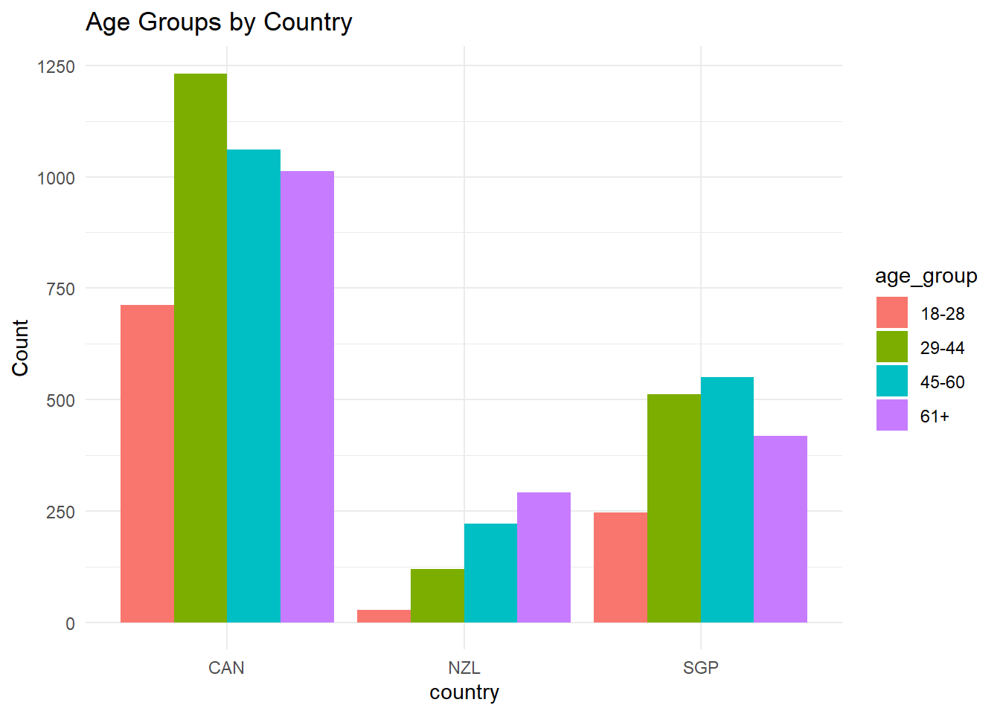
Both categorical (cont’d)
To get a better sense of the proportion for each country, we can use percent stacked bar chart.
The code is similar to previous bar charts; we just have to change the position argument to position = "fill"
Both categorical (cont’d)
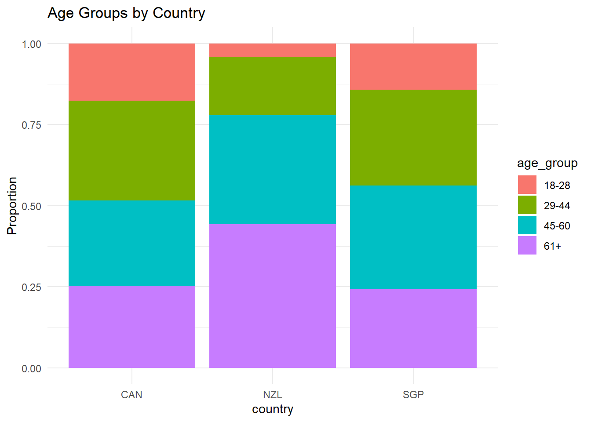
Both continuous
Examine linear relationships
Look for patterns and trends
Identify potential outliers
Let’s first examine the correlation between financial_satisfaction and life_satisfaction
Both continuous (cont’d)
Let’s visualize the two variables together with a jitter / scatterplot!
Both continuous (cont’d)
`geom_smooth()` using formula = 'y ~ x'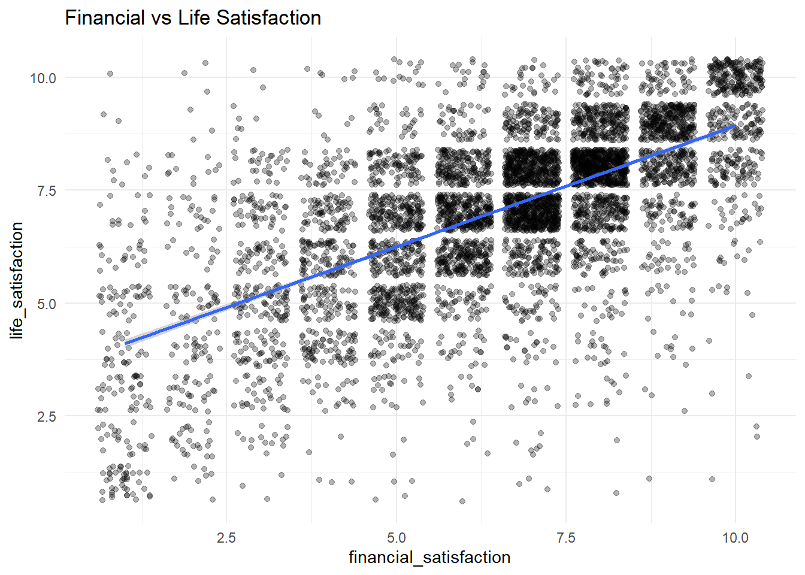
Correlation Plot
When there are more than two continuous variables to explore, correlation map is sometimes used. We can achieve this with ggplot, but it’s much easier to use the corrplot() function from the corrplot package.
Let’s visualize the correlation map for these three variables.
Correlation Plot
corrplot 0.95 loaded# select all the columns for correlation calculation, save it to columns_for_corr
columns_for_corr <- wvs_cleaned |>
select(financial_satisfaction, life_satisfaction, age)
# pass the columns_for_corr to cor() function, and save the result to cor_matrix
cor_matrix <- cor(columns_for_corr)
# visualize the cor_matrix with corrplot()!
corrplot(cor_matrix,
method = "shade", # show the correlation strength as color shades
addCoef.col = "black", tl.col = "black") # label the coefficients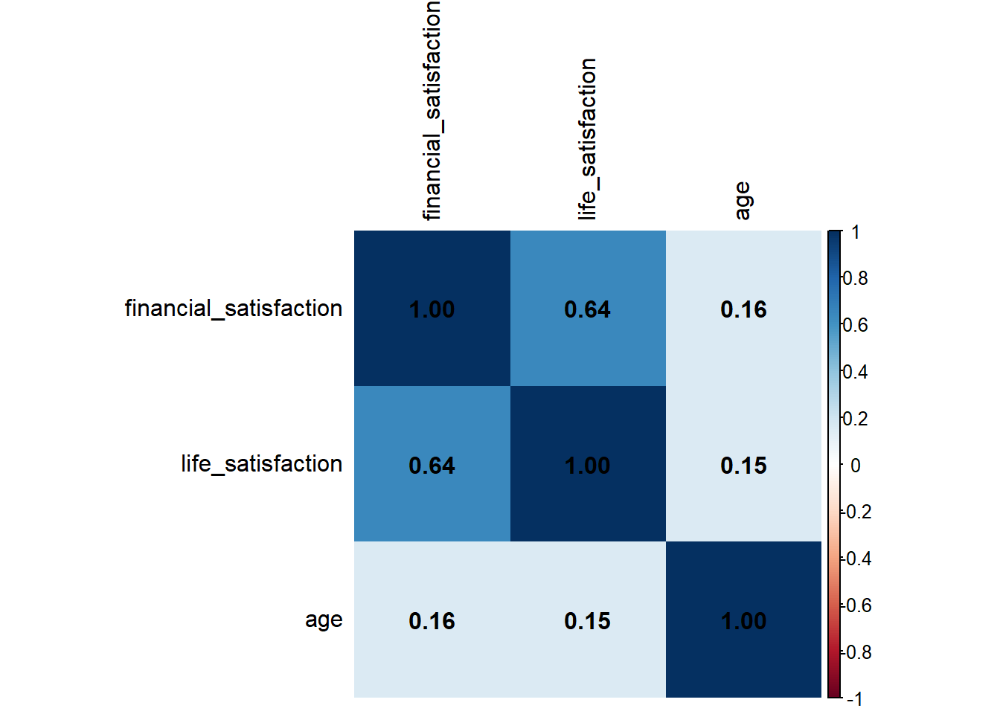
Correlation Plot - shorter code
We can shorten the code in the previous slide using the maggritr pipe |> like so:
Refresher:
Notice that we don’t have to pass the column names to cor() and corrplot() function. This is because the maggritr pipe |>, acts as a “conveyor belt” that take output from one step and then immediately feed it to the next step.
Correlation Plot - shorter code
One continuous, one categorical
Compare distributions across groups
Identify group differences
Examine spread within groups
Let’s do a recap from last week and get the summary stats for life_satisfaction for each country
wvs_cleaned |>
group_by(country) |>
summarise(
mean_satisfaction = mean(life_satisfaction, na.rm = TRUE),
median_satisfaction = median(life_satisfaction, na.rm = TRUE),
sd_satisfaction = sd(life_satisfaction, na.rm = TRUE)
)# A tibble: 3 × 4
country mean_satisfaction median_satisfaction sd_satisfaction
<fct> <dbl> <dbl> <dbl>
1 CAN 7.04 7 1.81
2 NZL 7.60 8 1.79
3 SGP 7.06 7 1.78One continuous, one categorical (cont’d)
To get a better sense of how the data is varied and spread, let’s visualize them with a side-by-side boxplot
One continuous, one categorical (cont’d)
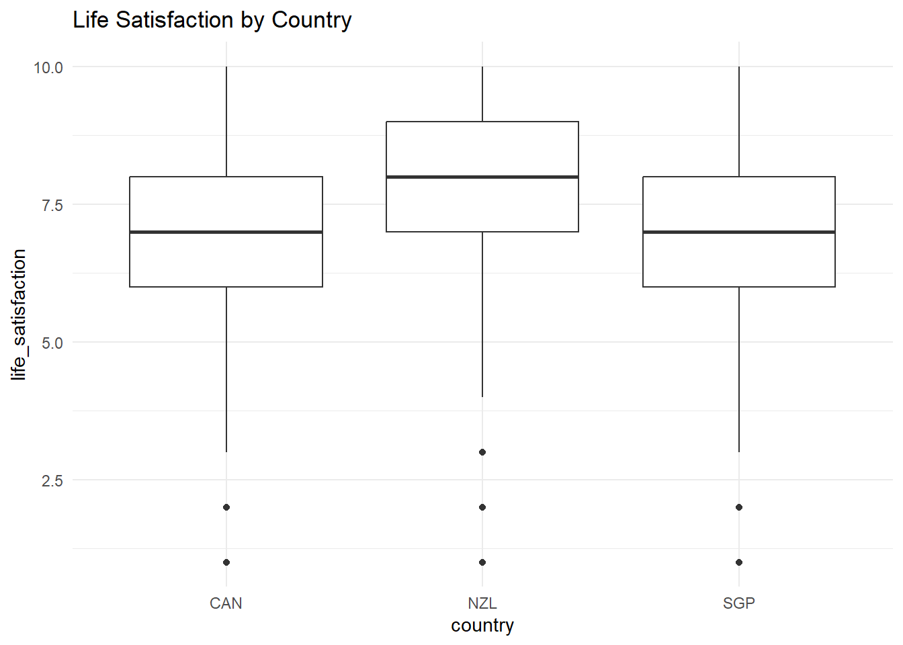
One continuous, one categorical (cont’d)
We could also layer our boxplots with violin plots to get a better sense of the distribution of each group.
One continuous, one categorical (cont’d)
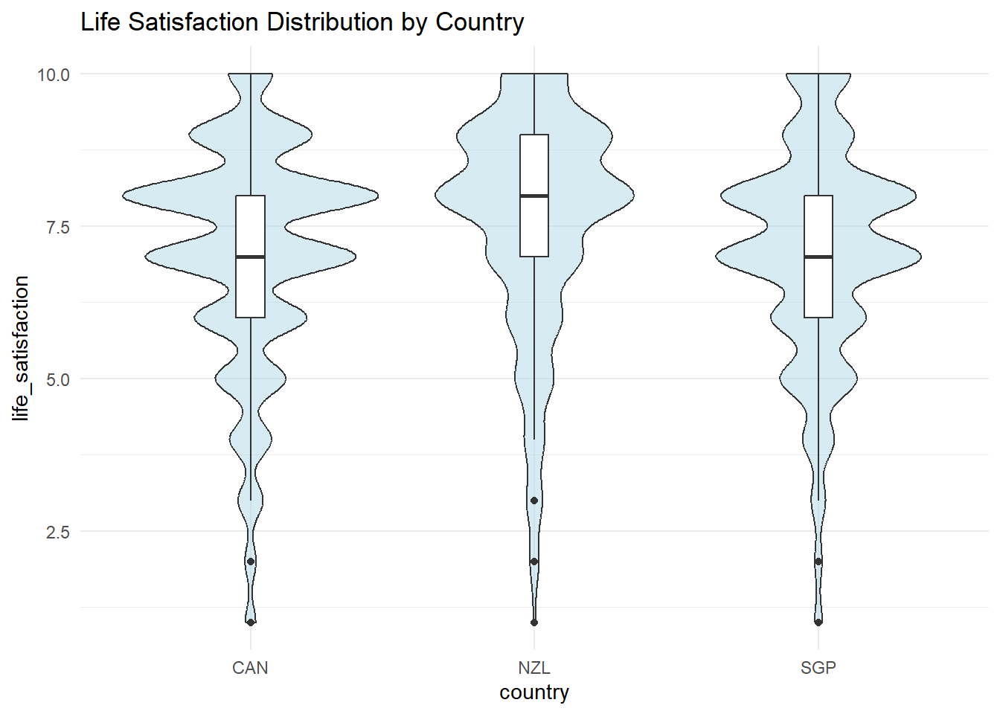
How to save your images - ggsave
There are two ways to do this:
Via
ggsaveThe point-and-click way in RStudio
Below is the ggsave way:
# save the chart into an object instead of viewing it like we have been doing
boxplot_obj <- wvs_cleaned |>
ggplot(aes(x = age)) +
geom_boxplot(fill = "lightblue", color = "navy") +
labs(title = "Age distribution of respondents",
x = "Age") +
theme_minimal()
# pass the saved chart into ggsave and give it a filename
ggsave("fig-output/boxplot_1.jpg", boxplot_obj) How to save your images - point-and-click
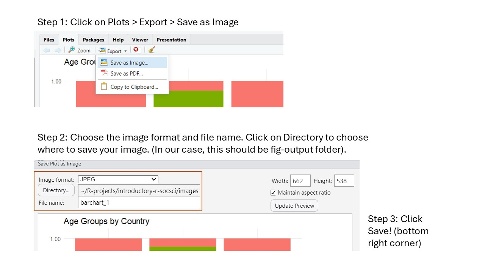Learning Check #2
Create a side-by-side boxplots that visualizes political_scale for each sex.
Learning Check #2
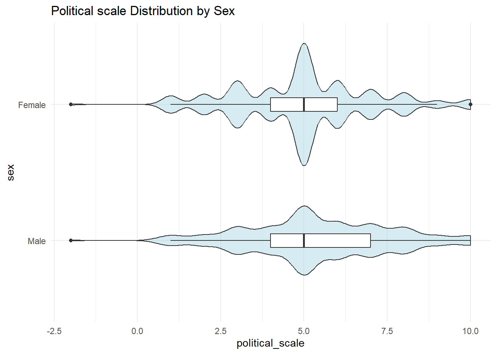
Using Facets for more complex visual
Compare patterns across multiple subgroups
Identify interaction effects
Maintain visual clarity with complex relationships
Facet grids are useful when we have more than two variables to visualize. However, if used excessively they may become too complex
Using Facets for more complex visual
`geom_smooth()` using formula = 'y ~ x'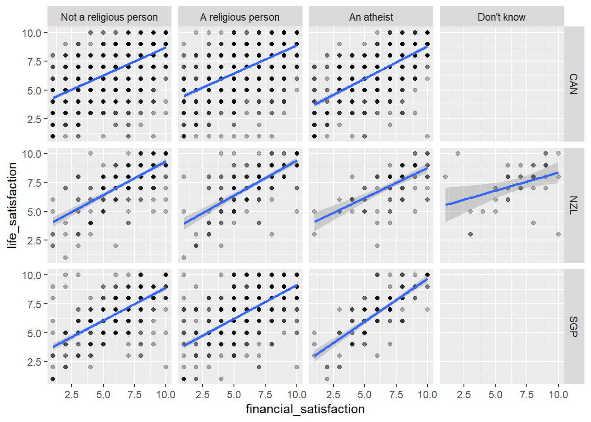
Is fancier = better?
Fancier, more complicated visualization does not necessarily mean better!
Take a look at this award-winning visualization by Simon Scarr

End of Session 3!
Remember the strategy:
- Have the ggplot documentation/cheatsheet open
- Decide on how many variables are involved. Is it just one? two? more than two?
- Determine whether the variables are categorical or continuous. If you have more than one, are they both categorical? one categorical + one continuous?
- Refer to the documentation to see which type of visualization would make sense for your variables.
Check out the R Graph gallery for inspiration and code samples!
Next session: inferential stats in R using WVS data